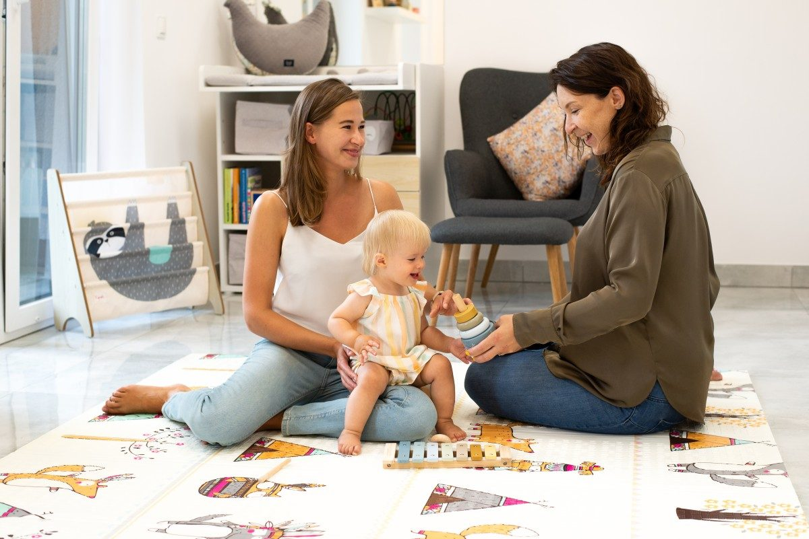
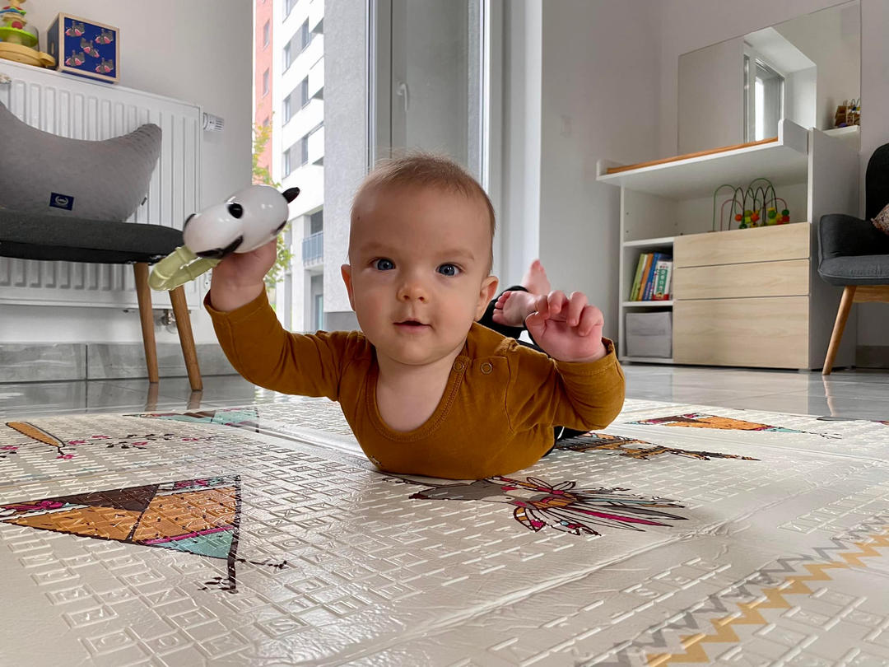
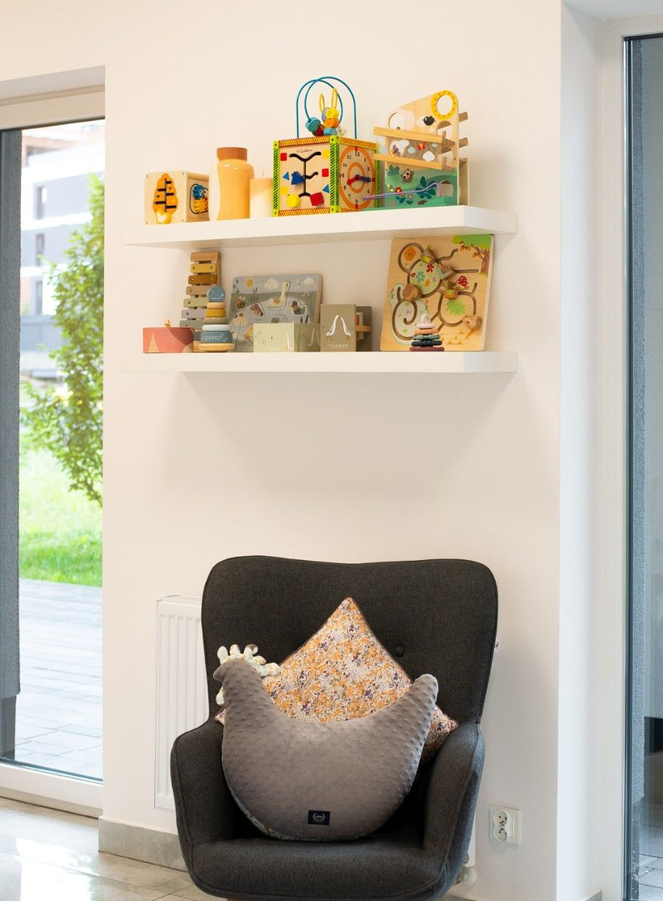
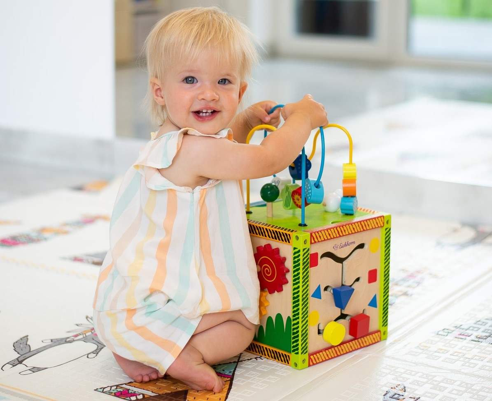
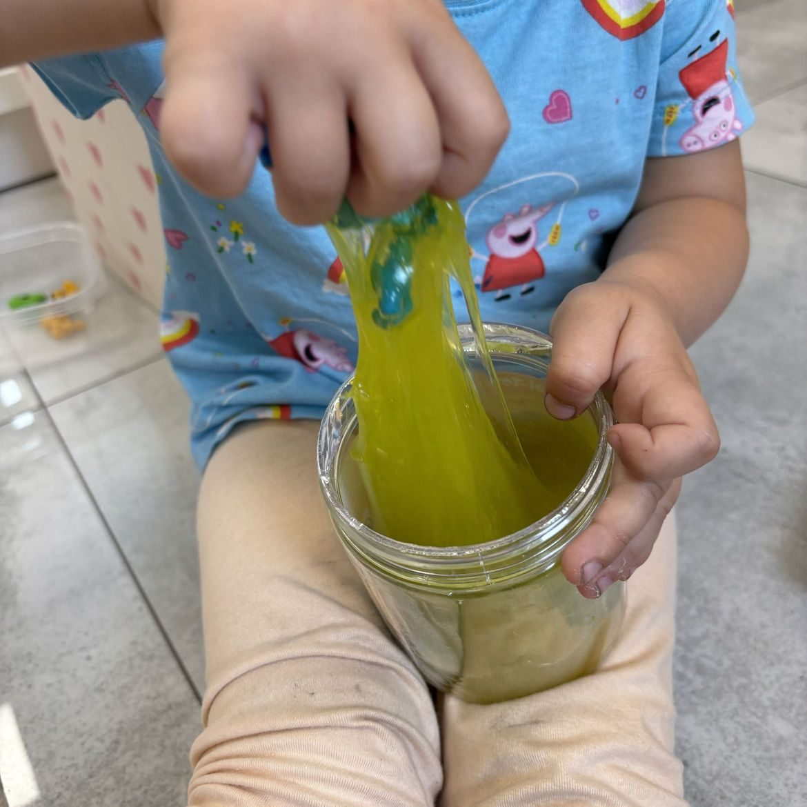
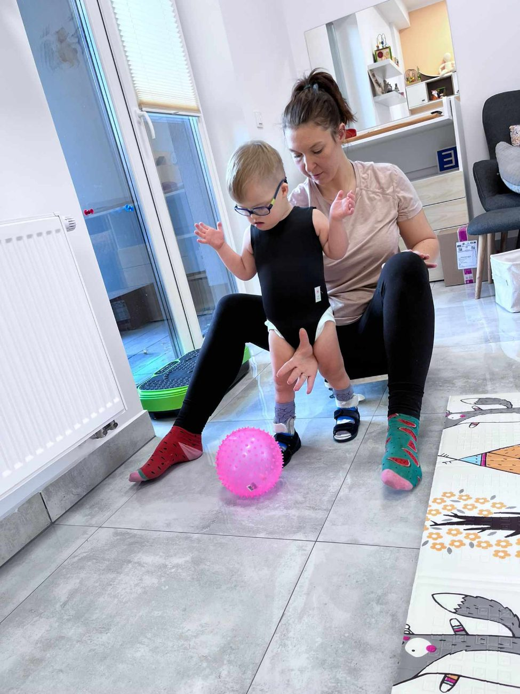
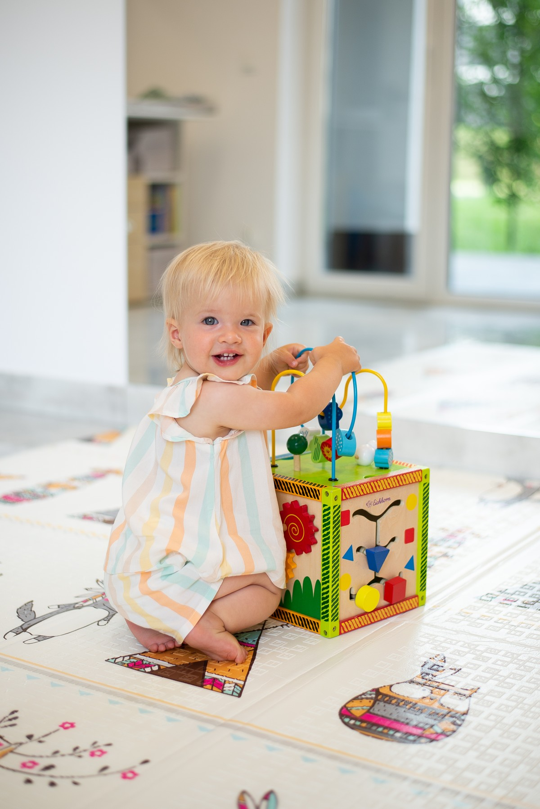

Poznaj Dobre Miejsce
Dobre Miejsce założyły dwie fizjoterapeutki dziecięce, Kamila Włodarczyk i Martyna Cesarczyk. Dziś to zespół 16 specjalistów, którzy wspierają rozwój dzieci od pierwszych dni życia po wiek nastoletni. Poznaj naszą historię, sposób pracy i ludzi, którzy tworzą to miejsce.
Umów wizytę
Dobre Miejsce
Jak zmieniło się Dobre Miejsce
Zaczynałyśmy we dwie, jako fizjoterapeutki dziecięce pracujące z najmłodszymi pacjentami: wcześniakami i niemowlętami. Z czasem rodzice zaczęli przychodzić do nas z kolejnymi pytaniami, a my zaczęłyśmy zapraszać do współpracy specjalistów, którzy mogli na nie odpowiedzieć.
Na początku
2 fizjoterapeutki
Rehabilitacja wcześniaków i niemowląt, diagnostyka rozwoju.
Dziś
16 specjalistów
Fizjoterapia, neurologopedia i logopedia, integracja sensoryczna, osteopatia, psycholog i trening. Dla dzieci od pierwszych dni życia po nastolatków, a także dla dorosłych.

Dobre Miejsce
Kompleksowe podejście
W Dobrym Miejscu oferujemy kompleksową opiekę terapeutyczną dla dzieci od pierwszych dni życia aż po wiek nastoletni. W pracy zajmujemy się głównie rehabilitacją wcześniaków i niemowląt z zaburzeniami napięcia mięśniowego. W zespole pracują fizjoterapeutki z doświadczeniem pracy na oddziale intensywnej terapii noworodka. Prowadzimy diagnostykę rozwoju niemowląt metodą HINE i ocenę ruchów ogólnych metodą Prechtla.
Prowadzimy diagnozę i terapię integracji sensorycznej. Wspieramy prawidłowy rozwój postawy ciała poprzez terapię wad postawy, terapię skolioz FITS i dobór wkładek ortopedycznych, a starszym dzieciom i nastolatkom pomagamy w fizjoterapii ortopedycznej i sportowej.
W zespole są też neurologopedki i logopedka, osteopaci, psycholog dziecięcy oraz trenerka. Specjaliści konsultują się ze sobą, a terapia zawsze uwzględnia indywidualne potrzeby małego pacjenta i jest prowadzona w przyjaznej, pełnej ciepła atmosferze.
Dobre Miejsce w Katowicach
Opieka od pierwszych dni życia
Przyjmujemy dzieci od pierwszych dni życia. Terapia prowadzona jest w formie zabawy.



Dobre Miejsce w Katowicach
Jak pracujemy
Terapia prowadzona w formie zabawy, w tempie dostosowanym do dziecka. Diagnozujemy i ustalamy plan terapii, ale to mały pacjent ma ostatnie zdanie.
{{ w.title }}
{{ w.text }}
Dobre Miejsce w Katowicach
Obejmujemy opieką dzieci:
- {{ c }}
Przyjmujemy też dorosłych: osteopatia, neurologopedia (m.in. porażenie nerwu twarzowego), trening dla kobiet w ciąży i po porodzie.

Dobre Miejsce
Nasz zespół
Dobre Miejsce założyły fizjoterapeutki dziecięce Kamila Włodarczyk i Martyna Cesarczyk. Dziś tworzy je 16 specjalistów, którzy wspólnie dbają o rozwój Twojego dziecka.
14 kolejnych specjalistów: fizjoterapeutki, neurologopedki, logopedka, osteopaci, terapeuta SI, psycholog i trenerka.
Poznaj cały zespół
Dobre Miejsce w Katowicach
Rejestracja
Wizyty umawiamy telefonicznie: 577 611 464 lub przez system rezerwacji online.
Kontakt
Jak do nas trafić
Zmieniliśmy adres. Gabinet działa teraz pod nowym adresem w Katowicach.
- Adres
- ul. Gen. Zygmunta Waltera-Jankego 48/1
40-612 Katowice - Telefon
- 577 611 464
- Godziny otwarcia
- [Godziny otwarcia]